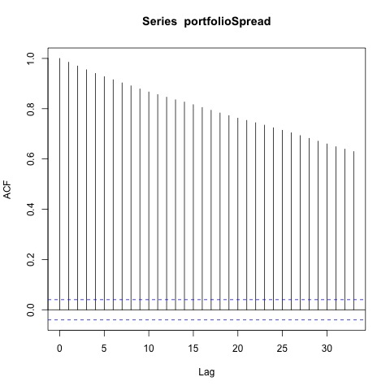
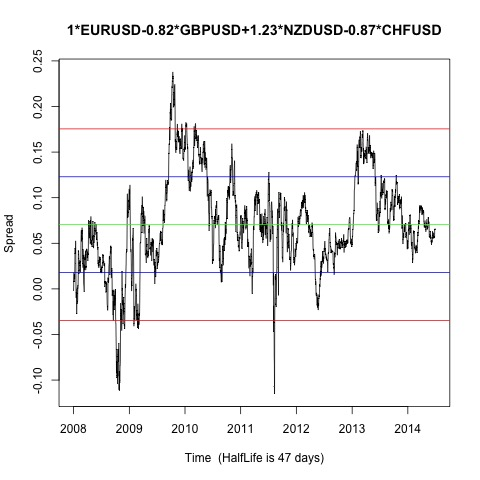

Johansen-Procedure "" "10pct" "5pct" "1pct" "r <= 3 |" 4.26 7.52 9.24 12.97 "r <= 2 |" 11.18 17.85 19.96 24.6 "r <= 1 |" 26.3 32 34.91 41.07 "r = 0 |" 51.79 49.65 53.12 60.16 "EURUSD.l2" "GBPUSD.l2" "NZDUSD.l2" "CHFUSD.l2" "constant" "EURUSD.l2" 1 1 1 1 1 "GBPUSD.l2" -0.82 -0.53 0.08 -1.44 -0.43 "NZDUSD.l2" 1.23 -2.81 -0.16 -1.95 -0.56 "CHFUSD.l2" -0.87 3.21 0.08 -0.72 -0.83 "constant" -0.07 -1.69 -1.44 3.44 0.47
Augmented Dickey-Fuller Test p-value 0.030733254611571 